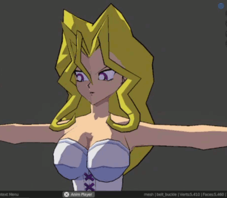

Hellllllllooooooooooooowwwwwwwww!!
It hasn't been *too* long since the last entry this time, hasn't it?
Well, you probably know the drill already, so let's go!!!
~~~
..I'm going to be 100% honest with you here... I haven't studied Japanese with Anki since the day after I posted the last entry....
I feel like such a loser. Such a fraud now......
If I were to pinpoint a reason, it would probably be because I'm no longer on holiday, so I no longer have that extra 8 hours of daily free time to do whatever. That means the little 8 hours I have currently needs to be shared between practising art, game development, and studying Japanese. Which IS very possible, but I was already a very lazy person during my break, so now I'm just a lazy person without freetime ^^;.
There's also this strange, painful, shameful feeling of missing one day after a long streak of studying that I think made me stop completely. As you can see in the screenshot, I was super consistant before, but after missing just one day, it all collapsed.
Though now that I'm venting out all these frustrations here, I think I'll try and go back in, for another swing at it. It's been a bit over 3 weeks, so it hasn't been long enough to forget everything completely, meaning there's still a chance. This time, I'll aim for faster card reads, more focused sessions of less reading, more revision, but less time actually spent. You might think that doesn't make much sense, but... it kind does?? What I mean is, I want to reduce the time spent actually study, but strengthen it's work....
..but actually, that might end up burning me out, resulting in another crash. So instead, I think I might just reducing my target cards down to around 70 per day, and make my sessions more chill and relaxed, maybe doing them before bed. Man, studying shouldn't be this complex.. I'm seriously overthinking this lol.
~~~
A couple entries ago, I remember mentioning that I was making a model of Mai Kujaku/Valentine from Yu-Gi-Oh to commemorate me finishing Season 0 and starting Duel Monsters. Well, I barely even got close to finishing ^^;. I only decided to jump back into Blender out of curiosity, and I ended up doing a bunch of fixes and tweaks, + some additions including real-time cel-shading! Here's a GIF::

...but damn, this might be first and last time I ever use a GIF ^v^;. 5MB just for 5 seconds of video.. that's awful! But I guess aside from uploading to YouTube (which takes too long), this is the only good way to do it. Since I had to compress it so badly, here's a much better snaps ::
Ahh.... that's much better. The nice, sweet weightless-ness of Webp. Only 37 kilos for a 1080x1080 image... perfect.
By the by (lol), it's still not rigged yet (because I haven't done her jacket or her shoes yet), but I decided to do something different with the eyes so I used an alpha card over her eye whites to get the effect. I also added in custom properties that let me control the UVs through my Cel shader, so whenever I do rig the model, I can just assign the eye bones and a Driver for the custom property! It's pretty smart, however, the downside is that it makes it impossible to use outside of blender, and I'm still not sure if I want to give out this model, I might actually back track on this decision.. These kinds of tricks are usually saved for animation/movie specific models, not optimized game-ready models (which I've been making this model with that in mind).
Also, is it just me, or does she look naked in the screenshot? I know I'm the one who took it, but I'm only just now realizing ^^;
~~~
This is going to be totally crazy to hear after the more chill 3D model stuff, but...
Have you ever woken up to the smell of feces? Have you ever dreamt of
Return to the Chronicle.